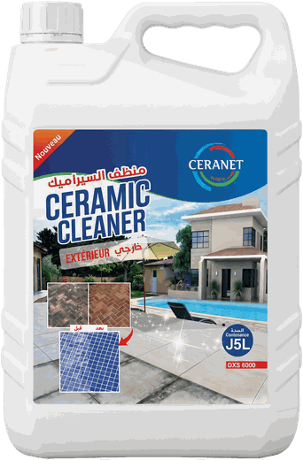
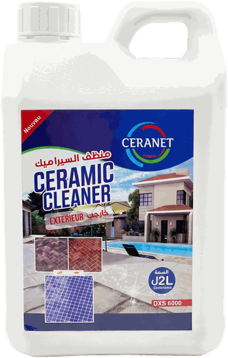

للخارج


سيرانيت للخارج DXS 6000
للفناءات والممرات وحواف المسابح. تركيبة مركّزة تذيب الكلس والطحالب والرواسب العنيدة التي يخلّفها المطر والتلوث، دون الإضرار بالسيراميك أو بالفواصل بين البلاط.
- المرجعDXS 6000
- الاستعمالخارجي
- السعة5 لتر